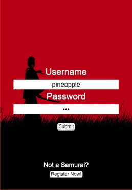
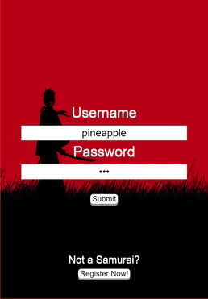

Run Samurai, Run!
Run Samurai, Run! is a top-down 2D infinite side scrolling runner game for mobile devices where the user will be able to take control of a small ninja and run and fight through mobs of enemies. The user has the choice between avoiding the enemies in the game or attacking them for rewards and upgrades, since the game scales in difficulty it is not be advised for the player to avoid all the enemies he/she sees since these upgrades will be essential for record-beating runs. The game has 2 game modes, single player and head to head multiplayer, for single player is the base game with the infinite running and leaderboards. Head to head is our multiplayer implementation of the game with a time limit and different methods of upgrading and scoring. You will compete 1 on 1 vs one of your friends or a random online player, the player who is able to gain the highest score (by staying alive the longest or by slaying enemies) will be crowned winner.
 


CPRE 288 - Autonomous CyBot
Autonomous CyBot is a modified iRobot that has been upgraded with many sensors and pieces of hardware, including IR and Sonar sensors. The goal of this project was to initialize all of the sensors working on this robot and program them to autonomously navigate a randomized obstacle course in a short amount of time. Me and my team were successful and had reached our goal. Our CyBot was able to navigate consistently in under 8 minutes.